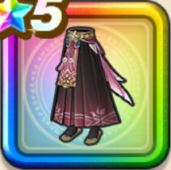

魔人の桃袴
攻略班 9.5点 / 魅了耐性+5%守備減耐性+10%守備減耐性+10%魅了耐性+5%スキルの斬撃ダメージ+9%ギラ属性斬撃・体技ダメージ+8%ドルマ属性斬撃・体技ダメージ+8%バギ属性斬撃・体技ダメージ+8%
くわしい特徴
【レベル別習得スキル】 Lv1魅了耐性+5% Lv3守備減耐性+10% Lv5スキルの斬撃ダメージ+9% Lv8ギラ属性斬撃・体技ダメージ+8% Lv10ドルマ属性斬撃・体技ダメージ+8 Lv12バギ属性斬撃・体技ダメージ+8% Lv15戦闘終了時にMPを3回復する Lv18守備減耐性+10% Lv20すばやさ+7 Lv23魅了耐性+5% Lv25さいだいMP+5 【限界突破スキル】 1凸攻撃力+12 2凸すばやさ+12 3凸守備力+12 4凸さいだいHP+12